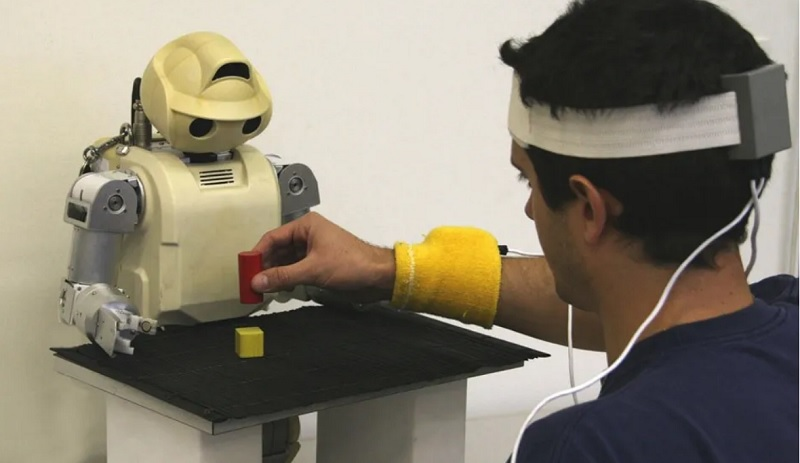

USO DE LOS ROBOTS
Robots de Aprendizaje
Robots humanoides domésticos
Dentro de un contexto doméstico, los robots asistentes requieren de un diseño amigable y funcional, para
ello, la alternativa humanoide presenta muchas ventajas.
Esto, con la intención de que sean de agradable interacción y se puedan utilizar en la estructura
existente de cualquier vivienda sin grandes modificadores.
Estas son las características que se han intentado emular en casi todos los prototipos conocidos hasta
ahora. Uno de los más famosos referentes puede ser Pepper.
Aunque muchos otros prototipos, más completos, se trabajan actualmente con resultados impresionantes.

Robots de interacción social y aprendizaje
Al compartir características físicas con los humanos, al menos en cuanto a estética se refiere, hace que el factor social o interactivo sea una rama evolutiva lógica para esta tecnología. Un ejemplo que impactó al mundo ha sido el conocido robot Sophia, el cual alberga un cúmulo de sistemas de software y hardware que le permite emular conversaciones coherentes con muy buenos resultados. Sophia, aunque no puede pensar por su cuenta realmente, es capaz de generar expresiones faciales realistas dependiendo de la conversación. Usando visión artificial, pude recoger información de su interlocutor y utilizarla como referencia para sus conversaciones. Aunque este poderoso chatbot con interfaz humana no representa la epítome de la evolución robótica, es innegable que, en un entorno social limitado, sus interacciones llegan a sentirse completamente vivas. Esta es la razón que la ha puesto ante los reflectores en conferencias de talla mundial, entrevistas de programas famosos e incluso le hizo galardón de una nacionalidad…

Robot en la plantilla comercial
El robot humanoide Tokyo es una aplicación muy popular como asistente de eventos, hostelería y en
entornos de negocios.
Este tipo de diseños hace destacar el papel de la tecnología dentro de la plantilla comercial.
Siendo capaces de entender a la perfección los comandos de voz e interactuar de manera eficiente con los
visitantes, entender su estado de ánimo y necesidades, para dar soluciones prácticas de manera
automática y semiautomática.
Un claro ejemplo es la cognición humana, ya que es un campo de estudio centrado en cómo los humanos
aprenden de la información sensorial para adquirir habilidades perceptivas y motoras. Los ingenieros
suelen utilizar el conocimiento para el desarrollo de modelos computacionales del comportamiento humano
y este ha evolucionado con el tiempo. De hecho, se estima que la robótica irá facilitando cada vez más
las tareas comunes de los seres humanos.
A pesar de que el objetivo inicial era la construcción de ortesis y prótesis para las personas, el
conocimiento se ha transferido entre las distintas disciplinas. Un caso es la prótesis de pierna con
motor para personas que sufren de discapacidad neuromuscular, como también su aplicación en ortesis de
tobillo y pie, prótesis de antebrazo, entre otras.
Tesla Optimus, el último de la clase
Cuando Musk demostró su cacareada primera versión de Optimus, expertos de todo el mundo destrozaron al
robot de Tesla como tecnología anticuada. Expertos como el investigador de inteligencia artificial Filip
Piekniewski, que lo declaró “como una vergüenza ajena” y “un timo completo y absoluto”. Cinthia Yeung,
una de las mayores expertas en robótica del mundo, dijo que “nada de esto es tecnología de vanguardia.
Contrata a gente capacitada o atiende cualquier conferencia de robótica, Tesla”. Sólo hay que ver el
vídeo (y compararlo con cualquier de Boston Dynamics) para ver la diferencia.
Efectivamente, da vergüenza ajena extrema ver esta demostración en 2022, casi tanto como escuchar las
palabras de Musk, los aplausos de los empleados de Tesla y leer los comentarios de sus fans
incondicionales. Pero, aunque Goldman Sachs reconoce que Tesla está muy retrasada, el magnate
sudafricano está de acuerdo en que es una industria prometedora, alguien de lo que poca gente duda.
Además, como suele ser habitual, Musk sube la apuesta exageradamente: en marzo de este año afirmó que su
robot humanoide Optimus va a tener más valor que toda la industria automovilística. Así se lo dijo a sus
inversores y a la prensa financiera en la conferencia de resultados de Tesla, donde anunció ingresos de
18.760 millones dólares para el primer trimestre del año. Una cantidad que será insignificante en
comparación a lo que van a ganar con el Tesla Bot, remachó.
Por eso dijo en su día que Tesla iba a
dedicar la mayor parte de sus recursos a crear este robot con inteligencia artificial. Musk aseguró
entonces que iba a dedicar el 70% de toda la investigación y desarrollo de Tesla para el robot, dejando
de lado a los coches con sólo un 30%.